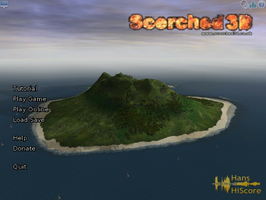
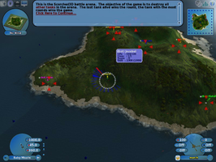
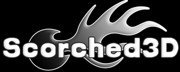

Scorched3D
Dieser Artikel wurde für die folgenden Ubuntu-Versionen getestet:
Ubuntu 16.04 Xenial Xerus
Zum Verständnis dieses Artikels sind folgende Seiten hilfreich:
Scorched3D  ist ein rundenbasiertes Taktik-Artilleriespiel, welcher seine Stärken im Multiplayer-Modus voll ausschöpft. Es erinnert stark an Scorched Earth, ist im Gegensatz dazu aber 3D. Es lässt sich alleine, im LAN oder online spielen. Scorched3D ist ein Open Source-Spiel mit großer Community und wird immer noch aktiv weiterentwickelt. Es besteht die Möglichkeit, eigene Server mit eigenen MODs anzubieten, was das Spiel sehr abwechslungsreich macht.
ist ein rundenbasiertes Taktik-Artilleriespiel, welcher seine Stärken im Multiplayer-Modus voll ausschöpft. Es erinnert stark an Scorched Earth, ist im Gegensatz dazu aber 3D. Es lässt sich alleine, im LAN oder online spielen. Scorched3D ist ein Open Source-Spiel mit großer Community und wird immer noch aktiv weiterentwickelt. Es besteht die Möglichkeit, eigene Server mit eigenen MODs anzubieten, was das Spiel sehr abwechslungsreich macht.
Für den Betrieb des Spiels ist eine funktionierende 3D-Unterstützung notwendig (siehe Grafikkarten).
|  |  |
| Menü | Spieleszene |
Installation¶
Aus den Quellen¶
Folgendes Paket muss installiert [1] werden:
scorched3d (universe)
 mit apturl
mit apturl
Paketliste zum Kopieren:
sudo apt-get install scorched3d
sudo aptitude install scorched3d
Neuste Version per rpm-Paket¶
Möchte man Scorched3D online auf den offiziellen Servern spielen (inkl. Ranking), benötigt man immer die aktuellste Version. Da diese evtl. nicht vorliegt, muss man sich von der Downloadseite das .RPM-Paket herunterladen, mittels Alien [2] konvertieren und installieren.
Hinweis!
Fremdpakete können das System gefährden.
Spielstart¶
Das Spiel kann über den angelegten Starter "Spiele -> Scorched 3D" gestartet werden, oder mit dem Befehl[3]:
scorched3d
Spielablauf¶
Es wird rundenweise gespielt, d.h. jeder Spieler muss seine Einstellungen "Waffenauswahl", "Schussrichtung", sowie "Höhe" in einer vorgegeben Zeit vornehmen. Dabei ist das Gelände, sowie die Windrichtung und Windstärke zu beachten. Ist die Zeit abgelaufen und man hat die Spacetaste (für den Abschuss) vor Ablauf der Zeit nicht getätigt, verfällt dieser Spielzug. Ansonsten schießen alle Mitspieler gleichzeitig, das ist ein Spielzug.
Eine Runde besteht z.B. aus 10 Spielzügen (da es viele verschiedene Mods gibt ist das unterschiedlich). Ist eine Runde zu Ende wird eingekauft. Hier sind die Möglichkeiten für den Spieler, der das erste mal spielt, etwas erschlagend. Später wird aber genau das zum großen Taktikfaktor. Zur Auswahl stehen viele verschieden Waffen (die natürlich unterschiedliche Wirkungen haben) sowie verschiedene Schilde und Treibstoff.
Auf den Hauptservern kann man sich sein derzeitiges Ranking anschauen. Dieses wird je nach MOD unterschiedlich bewertet und von diesen gibt es reichlich. Der Reiz in diesem Spiel liegt auch darin immer wieder neue Möglichkeiten bzw. Taktiken zu finden, die Runde für sich zu gewinnen. Denn so wird auch der Gewinner des Spieles ermittelt: entweder nach gewonnenen Runden oder den meisten Abschüssen (je nach MOD). Eine kleine Hilfe findet man in den Links.

Infobox¶
| Scorched3D | |
| Genre: | Strategiespiel |
| Sprache: | |
| Veröffentlichung: | 2001+ |
| Entwickler: | Gavin Camp |
| Systemvoraussetzungen: | - |
| Medien: | Download |
| Strichcode / EAN / GTIN: | - |
| Läuft mit: | nativ |

- Erstellt mit Inyoka
-
 2004 – 2017 ubuntuusers.de • Einige Rechte vorbehalten
2004 – 2017 ubuntuusers.de • Einige Rechte vorbehalten
Lizenz • Kontakt • Datenschutz • Impressum • Serverstatus -
Serverhousing gespendet von